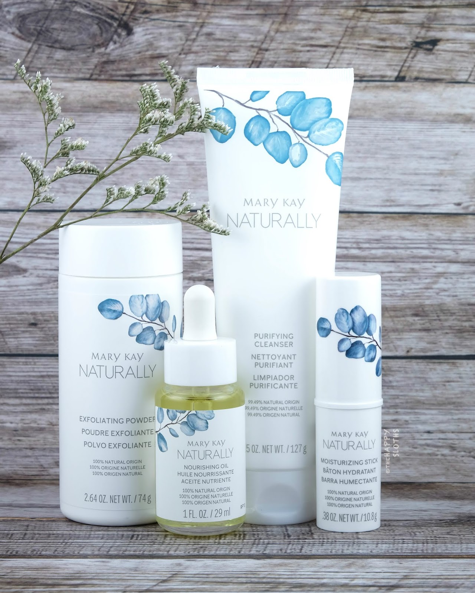
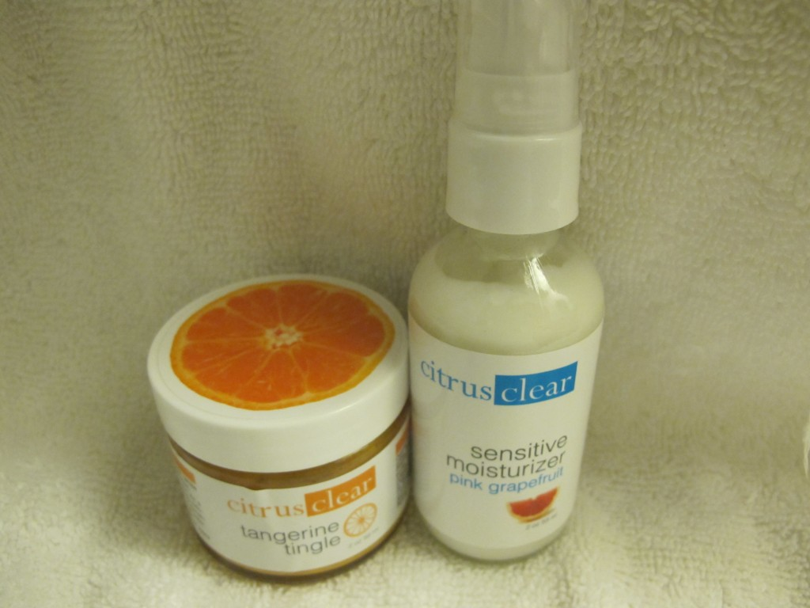
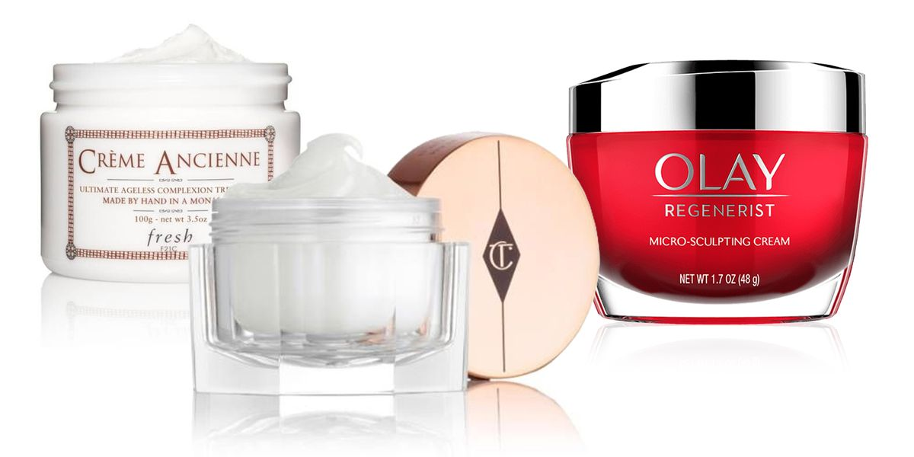

Lotions maintain skin's hydration levels by locking in the moisture, keeping the skin healthy, soft, and supple. Unlike a cream, the lotions are less greasy and have more water content. Here are some of their additional benefits:

Mary Kay Naturally
Lotions maintain skin's hydration levels by locking in the moisture, keeping the skin healthy, soft, and supple. Unlike a cream, the lotions are less greasy and have more water content. Here are some of their additional benefits:

Citrus Clear
Lotions maintain skin's hydration levels by locking in the moisture, keeping the skin healthy, soft, and supple. Unlike a cream, the lotions are less greasy and have more water content. Here are some of their additional benefits:

Olay Lotion
Lotions maintain skin's hydration levels by locking in the moisture, keeping the skin healthy, soft, and supple. Unlike a cream, the lotions are less greasy and have more water content. Here are some of their additional benefits: